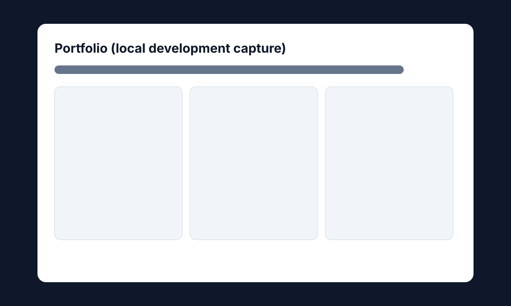

Portfolio
Status: Live

Overview
Personal portfolio site for truthful, recruiter-friendly project communication.
Tech stack
HTML, CSS, JavaScript
How it works
Loads project data from JSON and renders cards consistently across homepage and case-study links.
Why I built this
To present my transition story and technical work clearly for hiring conversations.
Interesting challenges
Balancing polished UI with strict truthfulness and maintainable static architecture.
What I’d improve next
Add richer project screenshots and deeper implementation notes as repositories mature.